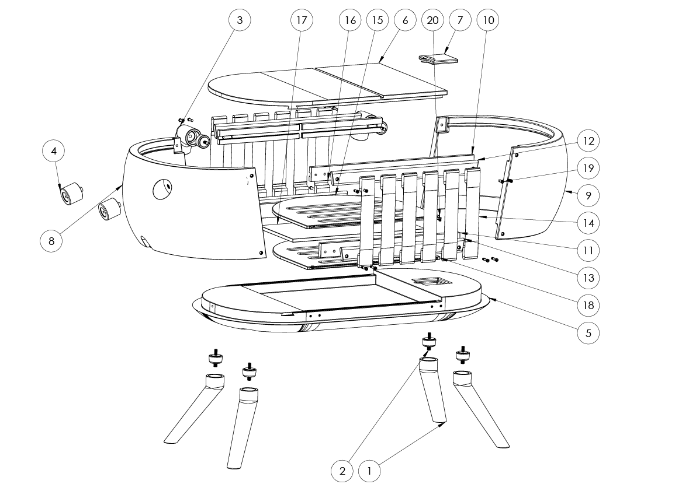
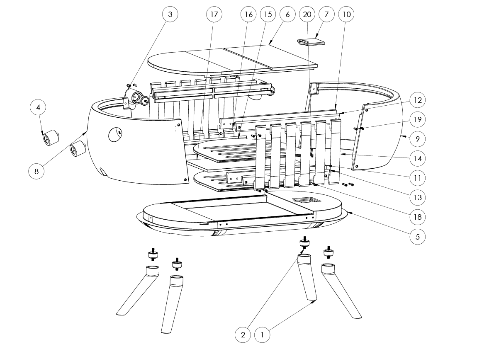

"THE SOLUTION"
Slow Furniture proposes a different approach to most of the products in the market by creating evolutionary furniture that grows and changes with the user. By focusing on the principles of the circular economy, this project designs furniture that can transform its function as the user's needs evolve. For example, a crib that can be converted into a desk as the child grows. This approach not only extends the life cycle of the product but also fosters an emotional connection between the user and the furniture, encouraging them to keep and adapt the item rather than dispose of it.
One of the key aspects of this project is the creation of an emotional bond between the furniture and its users. Emotional design enhances the longevity of products by making them more meaningful and valuable to the user. When users develop a personal connection with their furniture, they are more likely to maintain and repurpose it.
The technical development of Slow Furniture involved extensive research and analysis. The project started with an investigation of existing market solutions and user behavior through surveys and interviews. The design process include creating a detailed 3D model, analyzing stress and displacement, and optimizing pieces for am minimum use of material.


 
